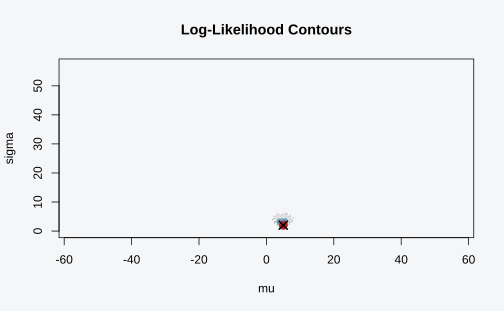

Comparing Models
Gilles Colling
2026-05-29
Source:vignettes/comparing-models.Rmd
comparing-models.RmdOverview
This vignette covers workflows for comparing statistical models to determine whether they are observationally equivalent. Two models are equivalent if they can produce exactly the same likelihood for any dataset.
Comparing two models
Setting up the comparison
First, define the two models you want to compare:
# Exponential distribution
exp_spec <- model_spec(
loglik_fn = function(y, lambda) sum(dexp(y, rate = lambda, log = TRUE)),
par_names = "lambda",
par_bounds = list(lambda = c(1e-6, 100)),
name = "Exponential"
)
# Gamma with shape = 1 (mathematically equivalent to exponential)
gamma1_spec <- model_spec(
loglik_fn = function(y, rate) {
sum(dgamma(y, shape = 1, rate = rate, log = TRUE))
},
par_names = "rate",
par_bounds = list(rate = c(1e-6, 100)),
name = "Gamma(shape=1)"
)
# Create the pair
pair <- equivalence_pair(exp_spec, gamma1_spec)
print(pair)
#> <equivalence_pair> Exponential vs Gamma(shape=1)
#> Model A: Exponential (1 parameter)
#> Model B: Gamma(shape=1) (1 parameter)Running the comparison
Use compare_surfaces() to test equivalence:
# Generate test data
set.seed(42)
y <- rexp(100, rate = 2)
# Compare (disable progress bar for vignette)
result <- compare_surfaces(pair, y, n_points = 30, progress = FALSE)
print(result)
#> <surface_comparison>
#> Conclusion: Models are NOT EQUIVALENT
#> Points tested: 60
#> Max discrepancy: 2.80e-05
#> Tolerance: 1.00e-06
#> Method: gridComparison methods
Grid method (default)
The grid method samples parameter space uniformly and checks if each point can be matched:
result_grid <- compare_surfaces(pair, y, n_points = 30,
method = "grid", progress = FALSE)
result_grid$max_discrepancy
#> [1] 2.785233e-05When to use: General-purpose method, good for most cases.
Optimization method
The optimization method actively searches for counterexamples:
result_optim <- compare_surfaces(pair, y, n_points = 30,
method = "optimization", progress = FALSE)
result_optim$max_discrepancy
#> [1] 3.290648e-05When to use: When you expect non-equivalence and want to find a clear counterexample quickly.
Setting tolerance
The tol parameter determines how close likelihoods must
be:
# Strict tolerance
strict <- compare_surfaces(pair, y, n_points = 30, tol = 1e-8, progress = FALSE)
# Relaxed tolerance
relaxed <- compare_surfaces(pair, y, n_points = 30, tol = 1e-4, progress = FALSE)
cat("Strict (tol=1e-8):", strict$equivalent, "max discrepancy:", strict$max_discrepancy, "\n")
#> Strict (tol=1e-8): FALSE max discrepancy: 3.032093e-05
cat("Relaxed (tol=1e-4):", relaxed$equivalent, "max discrepancy:", relaxed$max_discrepancy, "\n")
#> Relaxed (tol=1e-4): TRUE max discrepancy: 1.888234e-05Guidelines:
1e-6(default): Standard numerical precision1e-8: Very strict, may flag numerical artifacts1e-4: More permissive, allows for minor numerical differences
Comparing non-equivalent models
When models differ, the comparison reveals the discrepancy:
# Gamma with shape = 2 (NOT equivalent to exponential)
gamma2_spec <- model_spec(
loglik_fn = function(y, rate) {
sum(dgamma(y, shape = 2, rate = rate, log = TRUE))
},
par_names = "rate",
par_bounds = list(rate = c(1e-6, 100)),
name = "Gamma(shape=2)"
)
pair_diff <- equivalence_pair(exp_spec, gamma2_spec)
result_diff <- compare_surfaces(pair_diff, y, n_points = 30, progress = FALSE)
print(result_diff)
#> <surface_comparison>
#> Conclusion: Models are NOT EQUIVALENT
#> Points tested: 60
#> Max discrepancy: 2.71e+02
#> Tolerance: 1.00e-06
#> Method: gridComparing multiple models
Using equivalence_classes()
When you have several models, equivalence_classes()
performs all pairwise comparisons and groups equivalent models:
# Define multiple models
models <- list(
exp = exp_spec,
gamma1 = gamma1_spec,
gamma2 = gamma2_spec
)
# Find equivalence classes
classes <- equivalence_classes(models, y, n_points = 20, progress = FALSE)
print(classes)
#> <equiv_classes>
#> 3 models -> 3 equivalence classes
#>
#> Class 1: exp
#> Class 2: gamma1
#> Class 3: gamma2Accessing results
# Number of distinct classes
n_classes(classes)
#> [1] 3
# Members of each class
class_members(classes, 1)
#> [1] "exp"
class_members(classes, 2)
#> [1] "gamma1"
# Check if two specific models are equivalent
are_equivalent(classes, "exp", "gamma1")
#> exp
#> FALSE
are_equivalent(classes, "exp", "gamma2")
#> exp
#> FALSEViewing the discrepancy matrix
# Pairwise discrepancies
round(classes$discrepancies, 6)
#> exp gamma1 gamma2
#> exp 0.000000 0.000031 149.2187
#> gamma1 0.000031 0.000000 313.8425
#> gamma2 149.218691 313.842512 0.0000Batch comparisons
Comparing all pairs systematically
# Compare all pairs with detailed output
all_results <- compare_all_pairs(models, y, n_points = 20, progress = FALSE)Finding equivalent models
# Find all models equivalent to the exponential
equiv_to_exp <- find_equivalent_to(models, reference = "exp", y, n_points = 20)Visualizing comparisons
Likelihood surface visualization
For two-parameter models, visualize the likelihood surface:
# A two-parameter model
norm_spec <- model_spec_normal()
y_norm <- rnorm(50, mean = 5, sd = 2)
# Plot the likelihood surface
plot_likelihood_surface(norm_spec, y_norm, par = c(mu = 5, sigma = 2))
Debugging comparisons
When results are unexpected, use debug_comparison() to
trace the algorithm:
# Detailed trace of a single comparison
trace <- debug_comparison(pair, y, par = c(lambda = 2), direction = "A_to_B")
#> === Debug Trace ===
#> Direction: Exponential -> Gamma(shape=1)
#> Source parameters: lambda = 2
#>
#> Step 1: Computing source log-likelihood
#> Result: -43.116313
#>
#> Step 2: Computing target parameter bounds
#> rate: [1e-06, 100]
#>
#> Step 3: Finding matching target parameters
#> Target log-likelihood to match: -43.116313
#> Found parameters: = 1.575
#>
#> Step 4: Verification
#> Target log-likelihood at matched params: NA
#> Discrepancy: 7.03e-09
#>
#> === Summary ===
#> Status: Equivalent (discrepancy < 1e-6)Best practices
Start with small n_points: Begin with
n_points = 20-30to get quick results, then increase for final analysis.Use appropriate tolerances:
1e-6works for most cases; adjust based on model complexity.Check both directions: Equivalence requires A → B and B → A to match.
Examine the evidence: When models appear non-equivalent, check the
evidencecomponent to see where discrepancies occur.Consider the data: Different datasets may reveal different behaviors. Test with data from both models if possible.
Interpreting negative results
A conclusion of equivalence means:
No counterexample was found within the tested parameter region
This is numerical evidence, not mathematical proof
The conclusion depends on
n_pointsandtol
To increase confidence:
# More test points
result_thorough <- compare_surfaces(pair, y, n_points = 200, tol = 1e-8)
# Multiple random seeds
set.seed(123); r1 <- compare_surfaces(pair, y, n_points = 50)
set.seed(456); r2 <- compare_surfaces(pair, y, n_points = 50)
set.seed(789); r3 <- compare_surfaces(pair, y, n_points = 50)See Also
vignette("introduction")- Package overview and quick startvignette("identifiability-diagnostics")- When parameters can’t be distinguishedvignette("case-studies")- Real-world examples
Session Info
sessionInfo()
#> R version 4.6.0 (2026-04-24)
#> Platform: x86_64-pc-linux-gnu
#> Running under: Ubuntu 24.04.4 LTS
#>
#> Matrix products: default
#> BLAS: /usr/lib/x86_64-linux-gnu/openblas-pthread/libblas.so.3
#> LAPACK: /usr/lib/x86_64-linux-gnu/openblas-pthread/libopenblasp-r0.3.26.so; LAPACK version 3.12.0
#>
#> locale:
#> [1] LC_CTYPE=C.UTF-8 LC_NUMERIC=C LC_TIME=C.UTF-8
#> [4] LC_COLLATE=C.UTF-8 LC_MONETARY=C.UTF-8 LC_MESSAGES=C.UTF-8
#> [7] LC_PAPER=C.UTF-8 LC_NAME=C LC_ADDRESS=C
#> [10] LC_TELEPHONE=C LC_MEASUREMENT=C.UTF-8 LC_IDENTIFICATION=C
#>
#> time zone: UTC
#> tzcode source: system (glibc)
#>
#> attached base packages:
#> [1] stats graphics grDevices utils datasets methods base
#>
#> other attached packages:
#> [1] degen_0.15.0
#>
#> loaded via a namespace (and not attached):
#> [1] digest_0.6.39 desc_1.4.3 R6_2.6.1 fastmap_1.2.0
#> [5] xfun_0.57 cachem_1.1.0 knitr_1.51 htmltools_0.5.9
#> [9] rmarkdown_2.31 lifecycle_1.0.5 cli_3.6.6 svglite_2.2.2
#> [13] sass_0.4.10 pkgdown_2.2.0 textshaping_1.0.5 jquerylib_0.1.4
#> [17] systemfonts_1.3.2 compiler_4.6.0 tools_4.6.0 bslib_0.11.0
#> [21] evaluate_1.0.5 Rcpp_1.1.1-1.1 yaml_2.3.12 otel_0.2.0
#> [25] jsonlite_2.0.0 rlang_1.2.0 fs_2.1.0 htmlwidgets_1.6.4